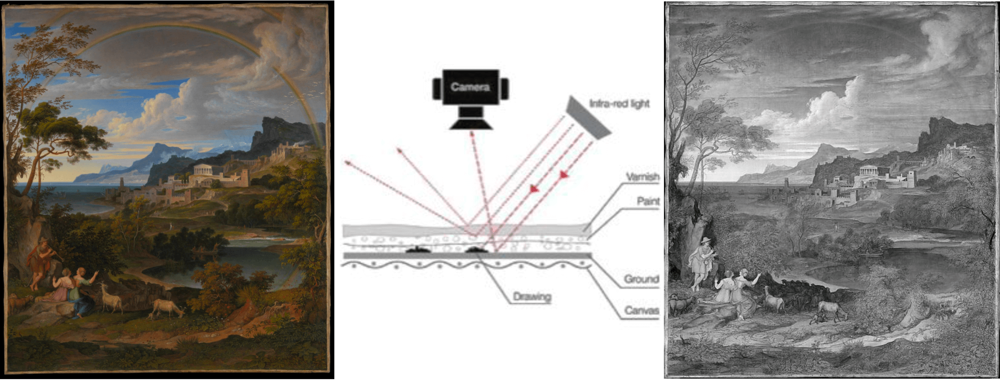
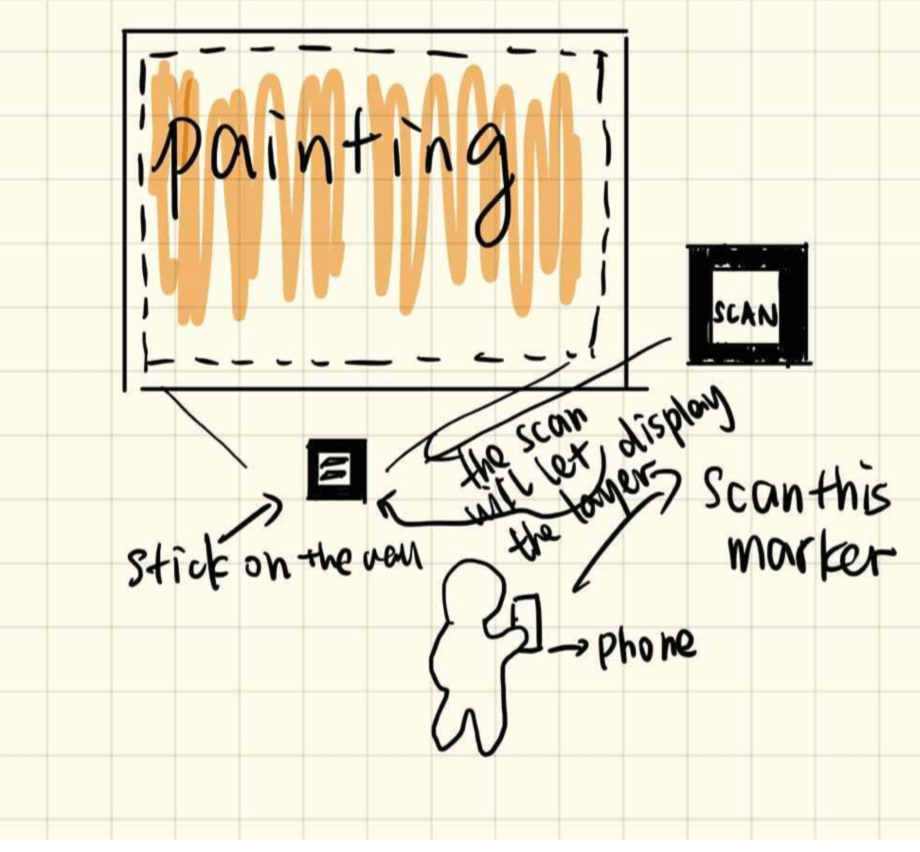
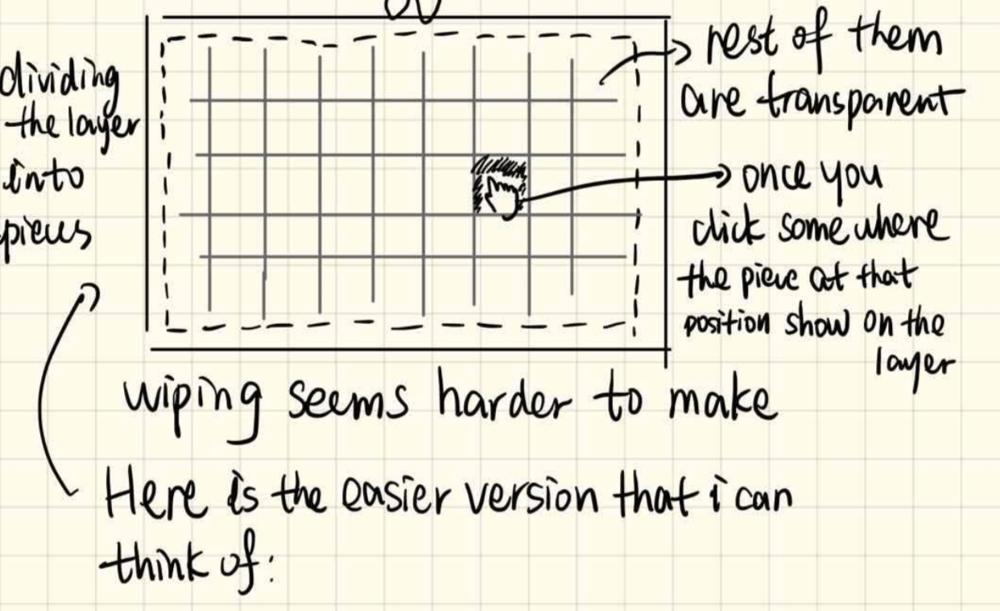
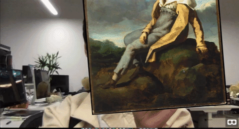
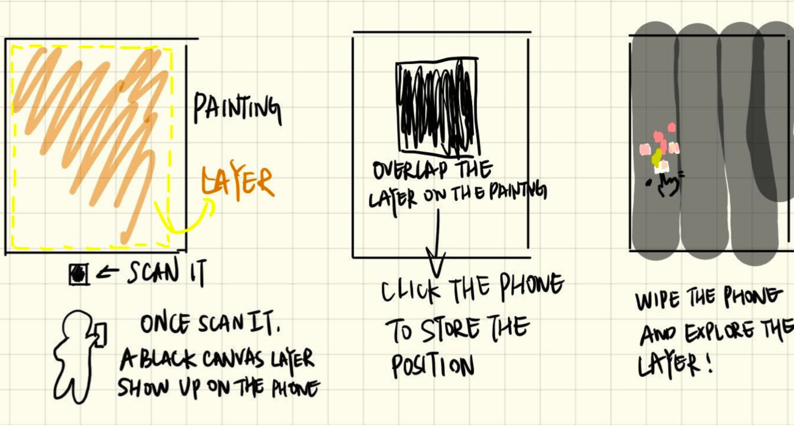

“Another Layer” is an augmented reality tool that invites the visitor to scan the painting and explore the underlying layer. Painters usually had different revisions of their paintings before the final version. Through infrared reflectography, the underlying painting can be revealed, however, most of the visitors never know this while they are visiting the museum. “Another Layer” is intended to bring this to the table, and create an interactive and in-depth experience to show the history and the creating process of paintings.

Museums are places of discovery and learning. The AR experience “Another Layer” combines both of these qualities and enhances further exploration in the realm of museums. Through pointing the smartphone directly onto one of the featured paintings, the visitor will experience an augmented version of the painting: underlying drawings, altered details, and sometimes different images appear on top of the original. While the naked eye can only see the first layer of paint, this experience can reveal another layer.
This project is a collaborative project between NYU Museum Studies grad school students and NYU Computer Science “Interactive Computing” course students. Mirabelle Spreckelsen, an NYU first-year graduate school student came up with the initial idea of another layer. She reached out to me and asked for the help of the technical parts. Before we started to build the prototype, we brainstormed the best way for the visitors to interact with the underlying layer, with the current technical limitation. The initial thought was that the camera could identify the painting, and display the layer on the painting. However, from the research that we did, none of the WebAR experience supported the identification of a specific object so far. So we altered the interaction and made it more playful.


For the prototype, we used the black & white marker to replace the painting. By scanning the marker which is placed next to the painting, the user will get the painting on the screen. In case visitors’ interaction will make the painting shaky and unstable, the visitor can click the screen and stabilize the painting. To add more playful interaction, we let the visitor paint on the painting. The underlying layer will show up as the visitor paints.

I used a wrapper of a-frame and p5.js that made by professor Craig Kapp to make the AR prototype with the core function. In the HTML file, I added the marker files and the paintings (original one and the underlying layer) with the a-frame function: a-assets and a-marker. In the JS file, I attached the original painting (a plane) to the marker, then I created an overlay canvas above it. To display the painting in a proper size, I set a maths function that calculates the scaling factor of the painting. I also set the detection for the boundary of the painting. When the visitor started to press the painting, the overlay image will be copied to the mapped position. For the prototype, we tested it on the computer, instead of the phone. For the future development, we will add the touch function to support the phone screen.

The prototype also supports the assistive technology. Brandon Halpin created the sound detection function. The blind can speak the name of the painting, and get the description of the underlying layer. Rebecca Hom made a single website or our project so that people can experience our project while we were presenting it.
< < back to check other projects
back to top